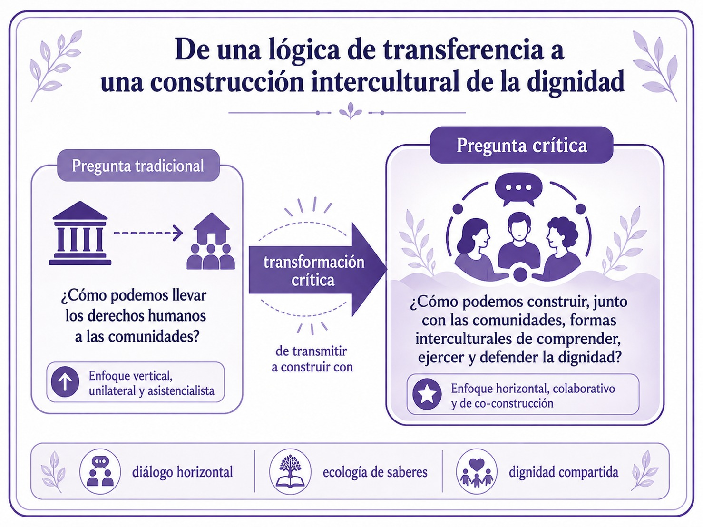
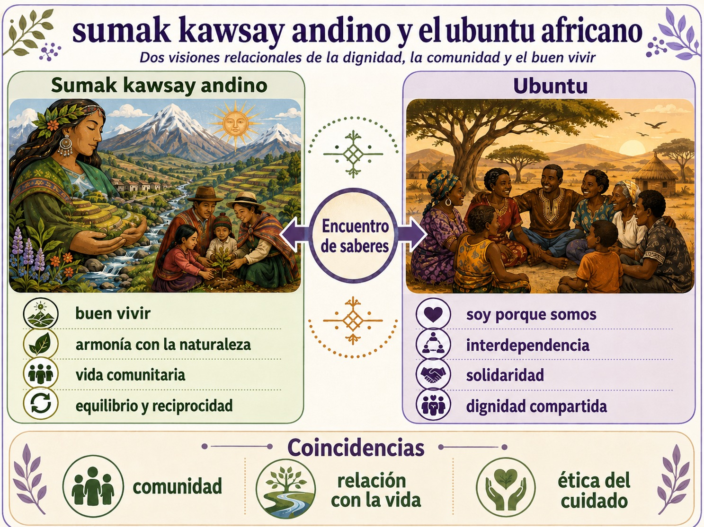
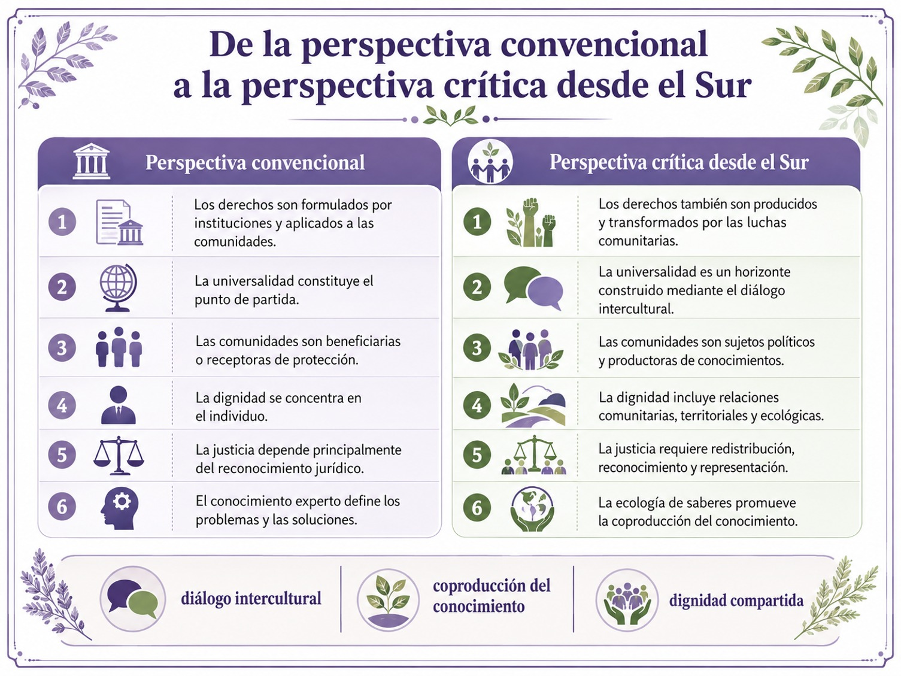
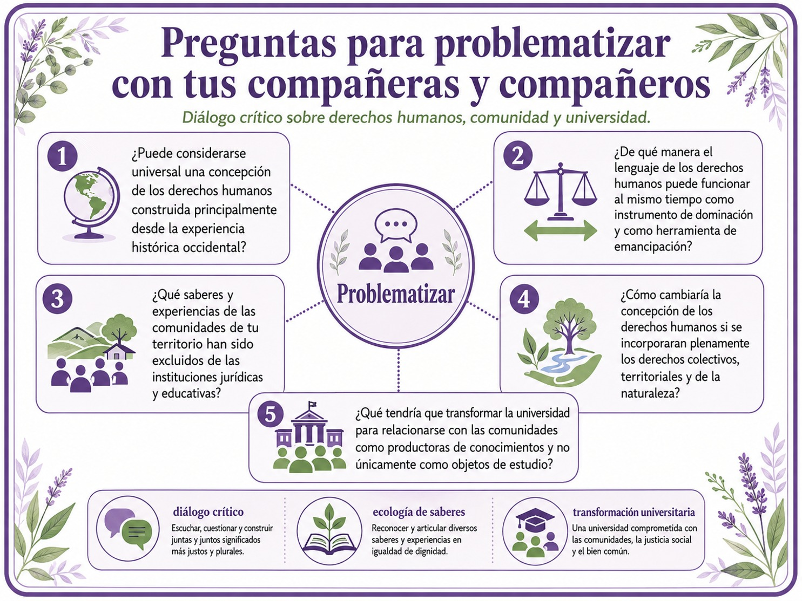

En una UCA anterior sobre Perspectiva de Género para el Diseño Social estudiaste los fundamentos históricos, jurídicos y éticos de los derechos humanos, así como los principales instrumentos nacionales e internacionales creados para protegerlos. Por ello, en este bloque no volveremos a revisar únicamente qué son los derechos humanos, cuáles son sus generaciones o en qué declaraciones se encuentran reconocidos. El propósito será avanzar hacia una problematización crítica de su origen, su pretendida universalidad y las condiciones concretas en las que se ejercen -o se niegan- en las sociedades del Sur Global.
- La pregunta central ya no será solamente qué derechos poseen las personas, sino también:
- ¿Quién define esos derechos, desde qué experiencias históricas, mediante qué conocimientos y en beneficio de quiénes?
Esta pregunta nos permite reconocer que los derechos humanos no existen exclusivamente como normas jurídicas. También constituyen un campo de disputa política, cultural y epistemológica en el que distintos grupos sociales luchan por definir qué significa la dignidad, quién puede ser reconocido como sujeto de derechos y qué formas de vida deben ser protegidas.
Los derechos humanos como proyecto civilizador
Los derechos humanos no deben entenderse únicamente como un sistema jurídico o como un conjunto de valores con pretensión universal. También representan un proyecto civilizador, debido a que proponen determinadas ideas acerca de la dignidad, libertad, justicia, igualdad y forma en que las sociedades deben organizarse. Lozano (2025)
Desde esta perspectiva, los derechos humanos han servido como un lenguaje político y moral mediante el cual los pueblos oprimidos han cuestionado regímenes autoritarios, estructuras coloniales, desigualdades económicas y diferentes formas de exclusión. Así, movimientos indígenas, campesinos, feministas, afrodescendientes, antirracistas, ambientales y comunitarios han recurrido al lenguaje de los derechos para reclamar reconocimiento, participación, autonomía y justicia.
Sin embargo, considerar los derechos humanos como un proyecto civilizador también obliga a examinar críticamente sus contradicciones, nos referimos a que la tradición moderna occidental proclamó derechos universales al mismo tiempo que legitimaba la colonización, la esclavitud, el racismo, el despojo territorial y la clasificación jerárquica de los seres humanos. En consecuencia, la historia de los derechos humanos no puede narrarse solamente como una expansión progresiva de libertades, sino también como una historia de exclusiones, luchas y reapropiaciones.
Reconocer las distintas luchas por los DDHH y los planteamientos desde la epistemología del sur
Lo primero que debemos aclarar es: ¿Qué entendemos por Sur Global? El concepto de Sur Global no se refiere exclusivamente a una ubicación geográfica. Designa principalmente un conjunto de sociedades y grupos humanos cuyas experiencias históricas han estado marcadas por el colonialismo, la dependencia económica, el extractivismo, el racismo, la desigualdad estructural y la subordinación de sus conocimientos.
El Sur Global comprende particularmente experiencias de América Latina, África y Asia, pero también puede incluir comunidades marginadas que viven dentro de los países considerados desarrollados. En este sentido, el Sur no es solamente un lugar geográfico: es una posición dentro de relaciones desiguales de poder.
Las sociedades del Sur Global suelen contar con constituciones, leyes e instituciones que reconocen formalmente los derechos humanos, no obstante, la existencia de normas no garantiza su ejercicio efectivo. Como sabemos, en estos contextos persisten grandes distancias entre los derechos proclamados y las condiciones reales de vida.
Por ejemplo, una persona puede tener formalmente derecho a la educación, pero vivir en una comunidad sin escuelas suficientes o de todos los niveles. Puede tener derecho a la salud, pero carecer de servicios médicos accesibles o de instalaciones adecuadas para ejercer ese derecho. Una comunidad indígena puede tener reconocido el derecho a la consulta, pero ser excluida de las decisiones relacionadas con proyectos extractivos realizados en su territorio. Esta distancia entre la norma y la experiencia cotidiana muestra que la universalidad jurídica puede coexistir con profundas desigualdades materiales.
Por ello, estudiar los derechos humanos desde el Sur Global te pide preguntar no solo si los derechos están reconocidos, sino si existen las condiciones económicas, políticas, culturales y territoriales necesarias para ejercerlos.
La crítica al universalismo abstracto
Uno de los principales problemas abordados por las epistemologías del Sur es la pretensión de que una sola concepción de la dignidad humana pueda aplicarse de manera uniforme a todas las sociedades. A eso se le conoce como universalismo abstracto y supone que los derechos humanos poseen un significado completo y previamente definido que después debe extenderse a otras culturas. Bajo esta lógica, Occidente aparece como productor del conocimiento y de los principios universales, mientras que los pueblos del Sur son presentados como receptores que deben adoptar dichos principios.
Esta relación puede reproducir una forma de colonialismo pero ahora en su versión epistemológica, es decir, que los saberes occidentales son considerados científicos, racionales y universales, mientras que los conocimientos indígenas, comunitarios, campesinos o populares suelen ser clasificados como creencias, costumbres o tradiciones locales.
La crítica decolonial no sostiene que deban abandonarse los derechos humanos. Tampoco propone aceptar cualquier práctica en nombre de la diferencia cultural. Su planteamiento consiste en cuestionar el monopolio de una sola tradición sobre la definición de lo humano y de la dignidad. El problema, por tanto, no es la aspiración a proteger universalmente a las personas, sino presentar como universal una experiencia histórica particular, sin reconocer las relaciones coloniales que participaron en su formación.
Modernidad, colonialidad y derechos humanos
Lozano (2025), recupera la perspectiva de Walter Mignolo para señalar que los derechos humanos se desarrollaron dentro de la matriz colonial de poder. La modernidad europea proclamó ideales de libertad, razón y progreso, pero produjo simultáneamente jerarquías entre pueblos considerados civilizados y pueblos definidos como atrasados, bárbaros o incapaces de gobernarse.
Esta contradicción permitió establecer una diferencia entre quienes eran reconocidos plenamente como seres humanos y quienes eran tratados como inferiores, subhumanos o prescindibles. La esclavitud, el colonialismo y la explotación de los territorios no fueron acontecimientos externos a la modernidad, sino componentes de su desarrollo histórico.
Y para nosotras y nosotros, es muy importante reconocer y reflexionar que la colonialidad continúa después de la desaparición formal de los imperios coloniales, manifestándose en las relaciones económicas internacionales, en la extracción de recursos naturales, en la subordinación de los conocimientos locales y en la imposición de modelos de desarrollo que afectan a comunidades sin permitirles participar de manera efectiva en las decisiones.
Desde esta mirada, los derechos humanos pueden desempeñar dos funciones contradictorias. Pueden utilizarse como justificación de intervenciones, políticas paternalistas o proyectos que hablan en nombre de los pueblos sin escucharlos. Pero también pueden ser reapropiados por las comunidades como instrumentos para enfrentar el despojo, defender sus territorios y exigir justicia.
La lucha por los derechos humanos en el Sur Global ocurre precisamente dentro de esta tensión: los derechos pueden formar parte del orden dominante, pero también pueden convertirse en herramientas para transformarlo.
El pensamiento abismal y la producción de ausencias
Boaventura de Sousa Santos (2002), denomina pensamiento abismal a la forma de conocimiento que establece una línea entre realidades visibles y realidades invisibilizadas. De un lado de la línea se encuentran las personas, instituciones y saberes considerados legítimos. Del otro quedan poblaciones cuyas experiencias pueden ser ignoradas, explotadas o eliminadas sin producir la misma respuesta social.
Las líneas abismales no siempre son visibles, pueden operar cuando determinadas vidas reciben mayor protección que otras; cuando los daños producidos en comunidades pobres son considerados inevitables; cuando la destrucción ambiental se justifica como costo del desarrollo; o cuando las personas afectadas no son reconocidas como productoras legítimas de conocimientos.
En el campo de los derechos humanos, esta lógica aparece cuando la protección jurídica depende de la nacionalidad, la clase social, el género, la pertenencia étnica o la posición territorial. También se manifiesta cuando las experiencias de las comunidades únicamente son incorporadas como testimonios, mientras la interpretación final continúa en manos de especialistas externos.
Las epistemologías del Sur buscan superar esta división mediante una sociología de las ausencias (De Sousa Santos, 2006), esta perspectiva muestra que muchas experiencias no son inexistentes, sino que han sido activamente desacreditadas, silenciadas o consideradas irrelevantes por los conocimientos dominantes.
Así, las luchas de los pueblos indígenas, de las mujeres, de las comunidades afrodescendientes, de las personas migrantes y de quienes defienden los territorios no son casos secundarios dentro de la historia de los derechos humanos. Son espacios fundamentales desde los cuales se producen nuevos significados de la dignidad y la justicia.
La ecología de saberes
Frente al monopolio de una sola forma de conocimiento, las epistemologías del Sur proponen una ecología de saberes que consiste en establecer relaciones horizontales entre conocimientos científicos, jurídicos, comunitarios, ancestrales y populares. Desde esta perspectiva no niega el valor de la ciencia ni del derecho internacional pero sí se rechaza es la idea de que estos sean los únicos conocimientos capaces de comprender la realidad y orientar las decisiones colectivas.
Por ejemplo, una comunidad que ha habitado un territorio durante generaciones puede poseer conocimientos relevantes sobre los ciclos del agua, la biodiversidad, las relaciones comunitarias y los efectos de determinadas actividades económicas. Estos conocimientos no deben incorporarse únicamente como información complementaria de una investigación científica sino que también deben participar en la definición del problema, en la producción del conocimiento y en la toma de decisiones.
Aplicada a los derechos humanos, la ecología de saberes implica reconocer que las comunidades no son objetos de protección ni simples beneficiarias de programas institucionales, sino que son sujetos políticos y epistémicos capaces de nombrar las injusticias que experimentan y de proponer alternativas.
En el siguiente gráfico puedes observar cómo esta perspectiva transforma la pregunta tradicional:

Te recomendamos ver estos videos para profundizar sobre este tema:
De los derechos individuales a las ontologías relacionales
La tradición liberal ha concebido frecuentemente a la persona como un individuo autónomo, separado de su comunidad y de la naturaleza. Desde esta concepción, los derechos protegen principalmente libertades individuales frente al poder del Estado.
Las epistemologías del Sur no niegan la importancia de estas libertades, pero muestran que la vida humana se sostiene mediante relaciones de interdependencia, es decir, las personas dependemos unas de otras, de nuestras comunidades, de los cuidados, de los territorios y de los ecosistemas.
Por ello, muchas luchas del Sur Global incorporan derechos colectivos, comunitarios y ambientales. Y es por eso que la defensa del territorio, del agua, de las lenguas, de la memoria y de las formas propias de organización no puede reducirse a la suma de derechos individuales.
Lozano (2025), recupera conceptos como el sumak kawsay andino y el ubuntu africano, que aunque provienen de tradiciones distintas, ambos cuestionan el individualismo y destacan que la dignidad se construye en relación con la comunidad y con otras formas de vida. El sumak kawsay, comúnmente traducido como buen vivir, propone una relación comunitaria y ecológica que no identifica el bienestar únicamente con el crecimiento económico. El ubuntu, por su parte, expresa una concepción relacional de la humanidad: la existencia individual se constituye mediante los vínculos con otras personas.
Puedes ver en el siguiente gráfico cómo estas perspectivas amplían el horizonte de los derechos humanos porque permiten pensar la dignidad no solo como una propiedad individual, sino como una condición producida y sostenida colectivamente.

Las luchas sociales como fuente de los derechos
Como hemos visto desde una perspectiva crítica, los derechos humanos no son concesiones otorgadas desde arriba por los Estados, los organismos internacionales o los grupos dominantes. Son conquistas históricas producidas mediante luchas sociales.
Como recordarás, los derechos laborales surgieron de las luchas de las y los trabajadores, y cómo viste en la UCA anterior, los derechos de las mujeres se ampliaron por las movilizaciones feministas. Igualmente, los derechos de los pueblos indígenas han sido impulsados por procesos de resistencia territorial, cultural y política. Y como está sucediendo en los últimos años, los derechos ambientales se han fortalecido mediante las luchas de comunidades que enfrentan proyectos extractivos y formas de despojo.
Esto significa que los derechos no permanecen inmóviles, es decir, su significado se transforma cuando nuevos sujetos cuestionan las exclusiones existentes y reclaman ser reconocidos.
En ese sentido, las luchas del Sur Global también muestran que los derechos humanos pueden ser reinterpretados pues las comunidades no se limitan a recibir un lenguaje jurídico previamente elaborado: lo traducen, lo modifican y lo combinan con sus propias memorias, conocimientos y formas de justicia.
Por ello, la dignidad no se construye exclusivamente en tratados, tribunales o instituciones, se produce también en las resistencias cotidianas de las personas y comunidades que defienden su vida frente a distintas formas de exterminio material y simbólico.
Hacia una traducción intercultural de los derechos humanos
La alternativa al universalismo abstracto no es el relativismo absoluto en el sentido de afirmar que todas las prácticas culturales deben aceptarse pues ello impediría cuestionar aquellas que producen o reproducen la violencia, discriminación o subordinación de algunas o algunos miembros de las comunidades.
Por el contrario, las epistemologías del Sur proponen una traducción intercultural, que consiste en establecer diálogos entre distintas concepciones de dignidad, justicia y bien común, sin asumir que una de ellas posee de antemano todas las respuestas. La traducción intercultural reconoce que ninguna cultura es completa, que todas pueden aportar conocimientos, pero también contienen desigualdades, silencios y relaciones de poder que deben someterse a crítica.
En este proceso, la universalidad deja de ser un punto de partida impuesto y se convierte en un horizonte construido colectivamente, es decir, los principios comunes no se definen antes del diálogo, sino que emergen de las luchas compartidas contra la opresión, el racismo, la violencia, el despojo y la destrucción ambiental.
Lozano (2025), denomina a esta posibilidad universalismo pluriversal. Se trata de construir acuerdos comunes sin eliminar la diversidad cultural y epistemológica. La pluriversalidad no significa que cada sociedad permanezca aislada, sino que diferentes proyectos de vida puedan dialogar en condiciones de igualdad.
Una reconfiguración emancipatoria de los derechos humanos
Desde las epistemologías del Sur, transformar los derechos humanos requiere al menos estos desplazamientos:

Esta reconfiguración no elimina los instrumentos internacionales ni las instituciones jurídicas, por el contrario, busca democratizarlos y hacerlos sensibles a las experiencias de quienes viven las violaciones de derechos.
La responsabilidad de la universidad
Aunque el papel específico de la universidad se desarrollará en los siguientes saberes declarativos, esta perspectiva te permite anticipar una responsabilidad fundamental: la universidad no debe relacionarse con las comunidades únicamente para estudiarlas, diagnosticar sus problemas o hablar en su nombre.
Desde una epistemología del Sur, la universidad debe construir relaciones de colaboración, reconocer los saberes comunitarios y contribuir a visibilizar luchas que han sido excluidas de los conocimientos oficiales.
Por ejemplo, Lozano (2025), recomienda desarrollar pedagogías decoloniales que enseñen los derechos humanos a partir de las memorias locales de lucha, así como promover alianzas entre universidades y comunidades para cartografiar conflictos invisibilizados. Esto implica que aprender derechos humanos no consiste solamente en memorizar tratados, sino en comprender cómo se producen las injusticias y cómo las comunidades organizan alternativas frente a ellas.
En síntesis, la lucha por los derechos humanos en el Sur Global exige superar la idea de que estos constituyen un modelo terminado que debe trasladarse desde los centros de poder hacia las periferias. Los derechos humanos pueden tener una vocación emancipatoria, pero únicamente cuando se someten a una revisión crítica de sus fundamentos coloniales, de sus pretensiones universalistas y de las desigualdades que condicionan su aplicación.
Las epistemologías del Sur permiten reconocer que la dignidad no posee una sola definición y que los pueblos no son receptores pasivos de derechos. Son productores de conocimientos, prácticas de justicia y proyectos colectivos de vida.
Desde esta perspectiva, la universalidad no consiste en imponer una misma visión del mundo, sino en construir acuerdos interculturales capaces de proteger la vida, enfrentar el despojo y reconocer la pluralidad de formas de existencia. El proyecto de los derechos humanos solo puede ser verdaderamente emancipador cuando sus principios emergen de diálogos horizontales y de las luchas concretas de quienes han sido históricamente excluidos.
En el siguiente gráfico encontrarás cuestionamientos que permitirán que explores los temas en conjunto con más estudiantes:

- Lozano, Miguel (2025). El proyecto civilizador de los derechos humanos en el marco de los problemas democráticos del sur global,
- MULTIVERSO JOURNAL | ISSN: 2792-3681 Volumen 5, Número 8, Edición enero-junio, 7-17.
- De Sousa Santos, Boaventura (2014). Derechos Humanos, Democracia y Desarrollo. Colombia: Ed. Dejusticia.
- De Sousa Santos, B. (2006). La Sociología de las Ausencias y la Sociología de las Emergencias: para una ecología de saberes:
- Renovar la teoría crítica y reinventar la emancipación social (encuentros en Buenos Aires), 13-41.
Te recomendamos ver estos videos para profundizar sobre este tema: